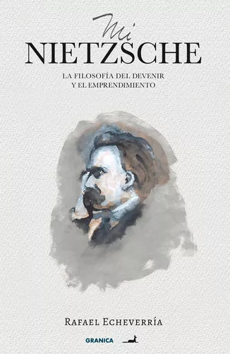
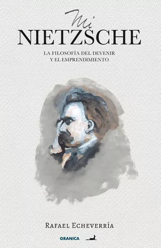
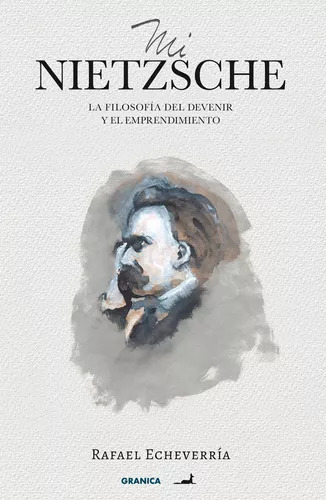

Nuestra Colección


 

En un mundo cada vez más digitalizado, la creación de una biblioteca virtual responde a la necesidad de adaptarnos a las nuevas formas de acceder y compartir información. Nuestra biblioteca virtual no es simplemente un repositorio de libros electrónicos, sino un espacio dinámico donde convergen la tecnología y el conocimiento, brindando numerosos beneficios a la comunidad y al medio ambiente.

¡Añade aquí una descripción sobre la importancia de almacenar libros de forma virtual para cuidar el medio ambiente!